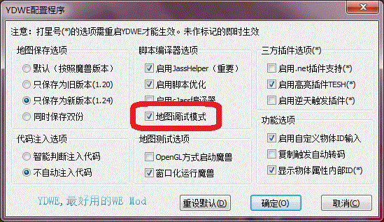

在前面的一章里,我们用一个结构写了一个简单的冲锋,说是冲锋,其实那只是一个强迫施法者移动而已,没有视觉效果,没有伤害.
在这一章里,我们将:
这点可以说是笔者选择Zinc的最重要的原因之一,相比Jass和Vjass,书写Zinc的时候可以因为少写很多字而节省时间,下面拿出一段Vjass代码和对等的Zinc代码做对比.
Vjass:
Zinc:
不难发现,在Zinc的语法里面,我们可以少写很多诸如set, call这类的关键字,节省很多时间.
库(library)是在Vjass里面就有了的概念,它的功能可以说是划分工作区域,也可以说是封装.说得简单一点,举个例子,大家都用过图形化界面的触发器(GUI- Trigger),比如有个英雄有风暴之锤和雷霆一击这2个技能,我们在写触发的时候肯定是建立2个触发器,而不会把这2个技能写在一个触发器里面.
库也是这个概念,在一个库的作用域内,这个库完成一个或者是一系列特定的工作,作用域这个范围就是两个花括号之间的范围("{"和" }").这一点在第一章的最后已经讲过了.
另外,在上面的例子中,我们可以发现两个库的最后一个函数名称有些不同,这是因为在Zinc里面,如果一个库里面有onInit函数的话,这个函数会被自动执行.
在Zinc里面,我们不再需要在触发编辑器里面的设置变量窗口来编辑全局变量了,所有全局变量可以直接在一个库的除了结构体内,方法内,函数内的任意地方声明.
如:
这样,我们就可以直接使用GAME_NAME和state这两个变量了.
另外,constant关键字的意思是该量为常量,不可重新对其进行赋值,仅仅可以读取该常量.
那么,public和private 是什么意思呢?字面上看,public是公众的,公共的,private是私人的,私立的.
public和private实际上是描述了该元素的作用范围,又叫访问修饰符,它们可以用来描述全局变量,结构体,方法,函数等.
在Zinc里,如果一个全局变量,函数,结构体没有访问修饰符,则默认为private.
private(私有)的元素无法被外部的库所使用.如果一个成员变量,方法没有访问修饰符,则默认为public.
这些规则看起来很纠结,不过在实际操作中也不是很重要,只是如果出现编译错误:
Line [行号]: [结构体名称].[成员变量或方法] is private
Line [行号]: Undefined type [结构体名称]
Line [行号]: Undeclared variable [全局变量名称]
Line [行号]: Undeclared function [函数名称]
我们就应该知道(首先要确定没有拼写错误)是不是调用了私有的东西.
虽然说public修饰的东西可以直接使用,但是有时候在使用一些Vjass的库的时候,还是会出现语法错误,找不到函数或者变量,这种情况下,一般让当前库requires目标库就可以了.如果还不行的话,就要查看目标函数是不是public的,这种情况下,要通过[目标库名称]_[函数名称],来使用.
Jass支持三种逻辑运算:
与之对应的,在Zinc里面要这样写
需要提出的是,由于Zinc语法的严格性,在if等关键字后面的条件(逻辑表达式)必须用括号括起来,否则会出现:
如果发现这种错误发生在逻辑表达式(条件)上面,就要查看是否忘记了加括号.
在Zinc里面,有一种特殊的if,叫static if,注意这个static和结构体里面的static除了拼写相同以外没有其他关系.
有别于普通的if,static if后面只能带布尔常量及其表达式.看这些字没用,static if最有价值的用法就是:
这里是让库TestA选择性地需求库TestB,那么在写代码的时候,就可以根据情况,根据库TestB是否存在而做适当修正.
JassHelper(YDWE)会根据当前存在的库自动生成一系列布尔常量,它们的格式为
比如根据上面那个库的声明,我们也许会写出这样的代码:
不得不承认,Jass的loop ... endloop循环在某些情况下非常好用,不过很可惜,在Zinc里面,我们只能使用 while, do ... while, for 来做循环.下面的介绍中间的例子是用3种循环结构打印数字0-9.
while循环的语法
过程:
示例:
do ... while循环的语法
过程:
示例:
for循环的语法
过程:
示例:
如果只看上面的例子,可能会觉得while和do ... while没什么区别,但是如果仔细看操作流程的话,可以发现do ... while无论如何都会先执行一次动作,这在一些特殊情况下会有用,尽管用while循环遇到这种情况可以直接在前面先写一条动作,不过这毕竟是一种选择.
for循环还有一种写法,笔者认为非常丑陋,实在不想拿出来,有兴趣的朋友可以参考Zinc Manual.
肯定有人发现了上面的例子里面出现了i += 1;这样的写法.
这也是Zinc里面出现的新语法,+=这样的操作符总共有4个:+=, -=, *=, /= ,它们叫做符赋值运算符.
Zinc里面还提供了一个关键字:debug,在开启地图调试模式的情况下,该关键字将会被无视,在关闭地图调试模式的情况下,debug这一整行都将被无视(自动注释掉).
打开编辑器的配置选项,上图为YDWE的地图调试模式位置,选择地图调试模式或者debug mode,即开启.
比如在测试地图的时候会在屏幕上打印一些信息,而真正给玩家玩的时候这些信息肯定是不必要的,在这种情况下,大家就可以使用debug关键字来进行操作.例如:
如果取消勾选地图调试模式,那么以上代码将不会被执行.
以上就是Zinc里面的常用语法以及与Jass, Vjass的书写不同的地方.下面将开始更新第一章里面的冲锋.
说起冲锋,比较常见的就是对路径上的敌人造成一次伤害,然后冲锋的时候肯定会有各种视觉效果,然后就是得多人,我们这里不光要多人,甚至一个单位在前一次冲锋没结束又冲锋都不会出问题.
我们即将做的事情有:
其实关于这一点,很多人已经会做了,为什么还要专门拿出来呢?在这里,笔者只是想提醒一些还没意识到把常用函数归类的朋友们,是时候总结一些自己常用的函数了.
实现视觉效果一般是用以下的方法:
但是,需要知道的是,有些特效如果在创建以后立即删除(即使用如上方法),该特效不会正常播放,所以我们通常会创建某个特效以后延迟一段时间以后将该特效删除.
实际上,我们不可能仅仅只做一次那样的工作,在一张地图里面,我们通常会多次"延迟删除特效",而创建一个特效的方式无外乎一下三种种:
其中第三种应该是很少使用的,毕竟使用坐标轴(第一种方法)会比较有效率一些.通过上面第一和第二个函数,我们会发现我们无外乎需要使用的就是模型路径,坐标或者物件和附加点这两种参数,然后我们这里要附加延迟销毁的特效,所以会多一个时间的参数.既然是经常使用的函数,我们可以专门写一个延迟销毁特效的函数,以后直接使用即可.
以上思想相信有一部分读者已经懂得,那么,地图写多了以后,肯定不会只有一个"延迟销毁特效"这样的函数,我们会有很多类似的工具函数需要使用,那么,我们就可以用一个库,将这些工具函数集中起来.
下面我们将写一个FuncToolkit,意为函数工具箱.这第一个工具,便是"延迟销毁特效".首先进行分析,然后给出代码,最后对代码涉及到的语法进行讲解.
既然是延迟做一些事情,那么需要使用计时器,以便将一些数据绑定在计时器上面,计时器到期以后将其销毁.所以要用到TimerUtils库,然后就不需要别的什么库了.
那么我们需要提供一些什么函数呢?其实就是前面列出的3个Common.j函数里面的前面两个(第三个使用点,并不是很实用),然后我们增加一个额外的参数,那便是时间.下面先写出库和函数的声明.
那么,这两个函数都会以各自不同的方式创建特效,然后延迟一段时间以后销毁,所以我们可以写一些结构体,将特效与计时器对应起来,然后在到期的计时器的动作里面将特效销毁.由于这两个函数创建特效的方式不同,我们是不是要写2个结构体呢?
看起来不用,因为我们可以发现这两个函数有一个共同点,就是销毁的方式应该是相同的,那么,我们可以在这两个函数的函数体内创建特效,然后将这个特效和延迟时间以参数传递给一个结构体,让这个结构体来做销毁动作.所以,我们将这个结构体命名为 DestroyEffectTimed,也是根据DestroyEffect来的.我们以如下的方式写.
上面的两个函数很明显,以各自的方式创建一个特效,然后交给DestroyEffectTimed结构,以延迟销毁特效.
然后DestroyEffectTimed结构以start为入口方法,提供了延迟销毁特效的功能.
在第一章里,我们使用create方法作为实例化结构所在的方法,那么这里怎么换了一个start了呢?前面提到过,create 方法是Zinc提供的一个模板方法,这个方法必须返回一个该结构的实例,这样的好处是可以在结构外对这个实例进行一些操作,那么前面也同时提到,那仅仅是一个选择以及标准而已,我们完全可以不去使用(重写)create方法,所以,这里换了一个方法名,笔者叫它start.
首先说thistype,这个比较简单,它只能在结构体内部使用,在保存地图的时候,它会被自动替换成 当前所在结构体的结构体名称,比如这里,我们写thistype和DestroyEffectTimed 是没有任何区别的.
前面的一章简要提到过this关键字,它的作用是在一个非静态方法里面,该关键字自动引动当前调用这个方法的实例.而在一个静态方法里面,不可以直接使用this,但是可以把 this作为一个普通的变量来使用,所以上面的:
可以写成:
或者:
之前我们在写冲锋的时候,专门定义了一个destroy方法来进行善后工作,这实际上只是一种好习惯而已,也不是必须的,一个结构的实例化所使用的方法实际上是allocate() ,而析构(销毁)方法实际上则是deallocate().
所以在这里告诉大家这么多看似无用的东西,只是想让大家知道,我们通常看到的很多相似的代码也许只是一种传统,一种大家都去默认遵守的写法,当然,这样是好的,这样可以提高代码的可交流性,比如一个结构体的入口方法我们总是使用 create或者start这样的名称,而出口方法则总是叫destroy这样的名字.但是,再次声明,那也仅仅是一种习惯而已,只要知道大的原则,大家可以随意发挥.
我并不是想表达一些矛盾的思想,只是希望大家能够在知道自己有多种选择的前提下,遵循一些大多数人常用的传统,如果你希望与别人交流你的代码的话.
最后提一点,如果我们很严谨(有些朋友确实很严谨,甚至严谨到执着),比如我们希望我们的代码是经得起千锤百炼的,我们肯定不希望用户在使用我们的函数的时候,通过传递一些非法参数而出现一些稀奇古怪的情况,如果我们实在是无法处理这些异常,我们至少应该给出一些提示信息.比如当用户(好吧,基本上只有自己)传递一个负值作为时间参数到上面的函数,会发生什么,这点值得我们思考.
那么,延迟销毁特效的函数就写好了,剩下的问题实际上就很简单了,只需在控制山丘之王移动的动作里面加一条销毁特效就可以了.
下面是代码:
在这里,我们为什么要专门声明一个常量来表示这个特效的模型的路径呢?这同样是一种好的编程习惯,试想我们在这段代码里面多次使用这个石头碎裂的特效,然后有朝一日我们想把所有的石头碎裂特效修改成溅血特效,那我们是不是还要把所有的这么一长串字符修改成新的字符串呢?显然这是一种很麻烦的行为.所以,将所有的常量与代码分开来放置,这也是一种习惯,是一种比较好的建议.
其实如果对触发器有一定了解的朋友并不会认为这是个很难的问题,因为触发器里面本来就有地形判断,在这里之所以单独把这个问题列出来,只是为了向大家介绍一个别人写好的库而已:
所以,在移动单位之前可以先行判断目标地形是否可行走,如果已经不能走了,那么直接将控制计时器动作是否执行销毁的那个成员变量count设置为满足销毁条件的值就可以了.
相比上一个修改,这个修改也没什么挑战,就是每次移动以后选取附近的所有敌人,然后对他们造成伤害,再把伤害过的敌人放进一个单位组,在当次冲锋中不再对他们造成伤害.
分析上面的陈述,可以发现我们需要为冲锋的结构体增加一个额外的成员,一个单位组.
说到单位组,我又要向大家介绍库了:
至于造成伤害的代码,请读者参阅本章的附件,就不在这里列出了.下面将要讲的是本小节的重点,关于Zinc里面结构体实例的本质.
如果你尝试了一下目前的冲锋,会发现如果在正在冲锋的时候又按一次冲锋,会出现一些很有趣的动作.
原因很简单,因为前一个冲锋的实例还没有运行完,它会按照之前既定的路线去设置山丘之王的位置,同时,第二个冲锋实例 又是以完全不同的路线来执行的,所以两者之间发生了冲突.
那么,问题的原因都找到了,怎么修改呢,通过分析可以发现:一个单位在任何时候都只能进行一个冲锋动作,换句话说,单位和冲锋的实例应该是一一对应的关系.
所以,我们应该具备这样的能力,那便是在每一次一个单位开始冲锋的时候,查找有没有这个单位的冲锋的实例,听起来像是要把结构体的实例 和单位绑定起来.那么,朋友你是不是在期待我又介绍一个什么库来绑定数据到单位呢?好吧,从实际操作效果来说,是的,不过这个库不仅仅只有这些功能.
实际上,这个库并不复杂,它所做的事情仅仅是把魔兽争霸1.24版本的hashtable用Vjass的形式呈现了出来.
其实,既然是使用hashtable来将单位和实例关联起来,我们可以使用这个单位的句柄值(handle id)作为hashtable的主键,使用任意整数作为子键,然后存储的值便是转化为整数以后的实例.然后以后便可通过这个单位来查找到对应的冲锋了.
刚才提到的那个提供Vjass语法的hashtable库,实际上就是用一个自动生成的唯一的整数作为主键,使用我们传递进去的键值作为子键.这样看来,这个库限制了hashtable 的功能,原本是可以使用两个元素对应一个元素,现在只能一个元素对应一个元素了,但是在实际操作中,很少遇到需要二对一的情况.
读完注释以后有的朋友可能要发问了,只能使用一个键,还只能存储整数,这么"严重"地限制了hashtable的功能,为什么还要用?
答案也很简单,如果设计得当,通常我们只需要一个键,并且只需要存储整数.对最后一点保持高度怀疑没关系,读完这章就差不多懂了.
那么在冲锋里面,我们便可以使用一个HandleTable 来管理所有的冲锋实例,至于键,那自然是正在冲锋的单位了.既然是一个表管理所有的实例,那么我们可以使用一个静态的成员变量来作为这个表.关于静态成员变量,稍后做解释.
既然是在实际动作执行之前就要进行检查,那么在ChargeData结构里面可以新增一个方法,专门用作实际效果之前的检查,如果已经有实例与该触发单位绑定,那么对该实例的数值进行重新设定,需要修改的有方向(x, y轴上的位移dx, dy)和执行次数.
所以,最后剩下的问题就是将实例与单位利用HandleTable绑定起来,刚才讲过这些XXXXTable只能存储整数,不过,上一章在讲TimerUtils的时候讲过实例和整数是可以互相转化的;那么,事情就变得简单了.我们声明一个静态的HandleTable,新增一个开始方法start,并且在launch方法里面被调用.
在onInit方法里面,我们不仅初始化事件触发器,同时初始化一个管理这个结构实例的HandleTable.
一旦事件触发(技能施放生效),start被调用,根据当前这个单位是否有正在运行的实例与之相关,重设实例数据或者新建实例.
在新建实例里面,要立即把新的实例与这个单位关联起来,不然上一步就无从判断了.
最后,在destroy方法里面,增加一个HandleTable清空数据的方法:
相信以上注释已经足够清楚了,不过,细心的朋友可能还是发现了一个小问题.
在讲这些小问题之前,将继续介绍结构体的一些语法.该语法不是很重要,但是如果不进行了解,可能会对以后的一些代码感到困惑.
可能有的朋友还没看清楚Table库介绍里面的operator关键字,就碰到一屏幕的代码,把那个奇怪的写法给忘了.
在Table库的示例以及冲锋代码里面,出现了:
这样的用法.
大家知道[ ]是取得数组某一项的写法,方括号内应该写的是一个整数,它应该是一个索引,或者叫下标.无论什么,也不可能说放一个单位进去,这里用到的这种方式叫做操作符重载,这种说起来方便的写法其实对刚接触代码的人很不利,因为它根本就没有增加什么功能,只是改变写法而已.
操作符重载,顾名思义,让一些操作符(如+, -, *, <, [...)在特定情况下具有新的功能,弃用原本的功能,比如[ ] 原本是获得指定下标的值,而现在是以括号内的元素为键,获得hashtable里面的某个值.
所以,上面的Table库的介绍,如果这样写,可能会比较容易理解了:
以及:
所以,所谓操作符重载 ,实际上就是把一些常用方法换了一种写法而已.当然,如果Table结构里面没有进行操作符重载,我们就直接使用[ ],系统便将其默认为数组操作,如果前面的变量不是一个数组类型,或者是括号内的数不是整数,那么就要出现语法错误了.
这些便是操作符重载的基本思想,实际作用不是很大,只是提供一些比较方便的编程写法,具体的写法可以参考Table库里面的写法,虽然是Vjass,但是相信读者可以融会贯通,用Zinc的语法写出.更详细的中文资料在老虎的Vjass教程里面有讲到.
刚才讲到冲锋代码里面有一个小问题,其实不难发现:
这段代码在start和create 里面分别都出现,并且是一模一样的,在写代码的时候,我们通常要讲究不写重复的代码,这和之前拿一个常量来作为岩石碎裂效果的路径的思想是一样的,如果哪天这个count不是从25到0,而是从0到25了,我们就要分别在start和 create里面做修改,这样就增加了维护的难度.
仔细思考,又可以发现,无论是实例化一个新的冲锋,还是覆盖掉上一个冲锋,上面那一小段代码是无论如何都要执行的,所以设置数据这段代码就没有写在create ;里面的必要了,具体怎么写,请读者自己实践或者参考附件.
前面一直讲什么静态如何使用,非静态如何使用,讲的再多,不给出一些真实的东西,仍然不是很容易理解.
写一个含有一个简单结构体的库:
以上的代码包含了一个最简单的结构体,有一个静态成员变量,整数si,一个非静态成员变量,整数i,一个静态方法start,一个非静态方法move.
下面,打开mpq编辑器,导入该地图,然后提取里面的war3map.j文件,下面就是这个库的真面目:
粗略地一看,那些该死的public, private, static, method全没了,所谓的方法其实只是函数而已.
第一个函数原本是静态方法,在这里几乎是原封不动地拿过来了,只不过是函数名里面加上了库和结构体的前缀,还记得以前在TimerStart函数里面的function ChargeData.run和触发条件里面的function ChargeData.launch吗?它们的本质就是一个函数,当然可以那样写了.
那么,还记得在第一章里面对destroy方法的深入分析吗?在这里得到了印证,源代码里面的非静态的move方法是没有参数的,但是这里被自动加上了一个参数,叫this ,在第一章说的是this的类型应该是结构体名称,但是这里竟然变成了integer ,联系所谓的实例和整数互相转化,读者是不是想到了什么呢?别急,我们先来看两个成员变量.请暂时忽略那两个很长的函数.
在Jass里面,所有的变量必须在war3map.j文件最开头,那么,我们所谓的成员变量也通通被化为原形,提到了文件开头:
顺带提一下第一个常量,还记得static if 的朋友肯定马上就想起来了,因为我们这里有StructAnalysis这个库,那么LIBRARY_StructAnalysis就为true了.
接下来的4个常量或变量都是JassHelper自动生成的,是管理结构体用的,我们不用去操心.我们只用看最后的两个变量.
除去前面的库和结构体前缀,我们看到了si和i ,前者是静态成员变量,后者是非静态的,但是,有趣的是,我们声明这两个变量的时候,没有说它们是数组,但是那个非静态的怎么就变成数组了呢?
带着这个疑问,我们来看allocate和deallocate这两个"方法",不用看得太明白,但是一点是可以看出来的,allocate"方法"不带参数,返回整数.还记得结构体是怎么实例化的吗?
感觉到世界一下子明亮了很多吗?没错,根本就不存在什么实例和整数的相互转化,实例就是一个整数.而每次调用allocate "方法"都会获得一个唯一的整数.
那么,实例既然是一个整数,它调用非静态方法自然就是通过把自己作为参数传递过去,进行一些动作,比如下面那个deallocate"方法",它在使用this的时候是把this作为数组索引来使用的.所以,这就是非静态成员变量 i 变成了数组的原因,拿当前实例作为数组索引,就能获得"当前实例的这个属性"的值.这也是为什么在非静态方法里面可以直接就使用this 关键字来获取当前调用这个方法的实例,因为当前调用这个方法的实例以this这个名字被传递过来了.
所以,这里也解释了为什么静态的东西要用结构体类型去调用,而非静态的东西要用实例去调用.静态的成员变量和方法是共享于整个结构体的,无论是谁去使用,结果都是一样的,而非静态的成员变量和方法则是根据自身的这个整数值,要么作为参数传递进非静态方法,要么作为索引去读取一个非静态成员变量(数组).因此便达到了不同的实例的非静态成员变量以及方法做不同的事情的效果.
以前有人说,想把技能实现多人化,多用用数组就可以了,实际上就是把与这个技能相关的所有变量都设置成数组,然后每次施放技能就生成一个唯一的整数,作为索引,来使用这些数组.反观结构体的实现原理,不正是通过allocate 方法来生成一个唯一的实例,然后通过这个实例来做一系列的动作吗?所以说,千变万化,万变不离其宗,一切的障眼和变化的手法最终还是返璞归真为最初的实现理念.抓住这点,Vjass和Zinc就仅仅是另外一种写法的Jass了而已,而这样的写法,在被习惯以后,是要比纯Jass方便和易于管理的.
其实这一小结所介绍的这种通过mpq解析器读取war3map.j的方法可以在一定程度上帮助读者理解一些Vjass,Zinc语法,比如操作符重载,只要写一段简单的代码,然后把war3map.j文件读取出来,一切的花样都会还原本质.
同时,这里同样暴露出了一个比较敏感的问题,就是地图尺寸,我们什么都没干,JassHelper就生成了那么一大堆东西,还有几个数组,但是,一如笔者在前面讲过的,Vjass和Zinc的优势不在速度也不在尺寸上面,最大的好处是方便于设计,这点很难体会,但是随着写代码的经验增加,相信读者会慢慢体会到这点.并且,在WC31.24这样的版本下面,与其想方设法缩减代码尺寸还不如少弄点花哨的模型来得实在.
总的来说,这一章所涵盖的内容是比较多,一下子就接触了3个新的库,看起来效率很低,不过,我们常用的库也基本上快介绍完了,所以不用担心地图尺寸会增大很多的问题.这里帮助大家整理一下,在下面没有出现的但是在本章出现的知识点不是很重要,这里理出重点: